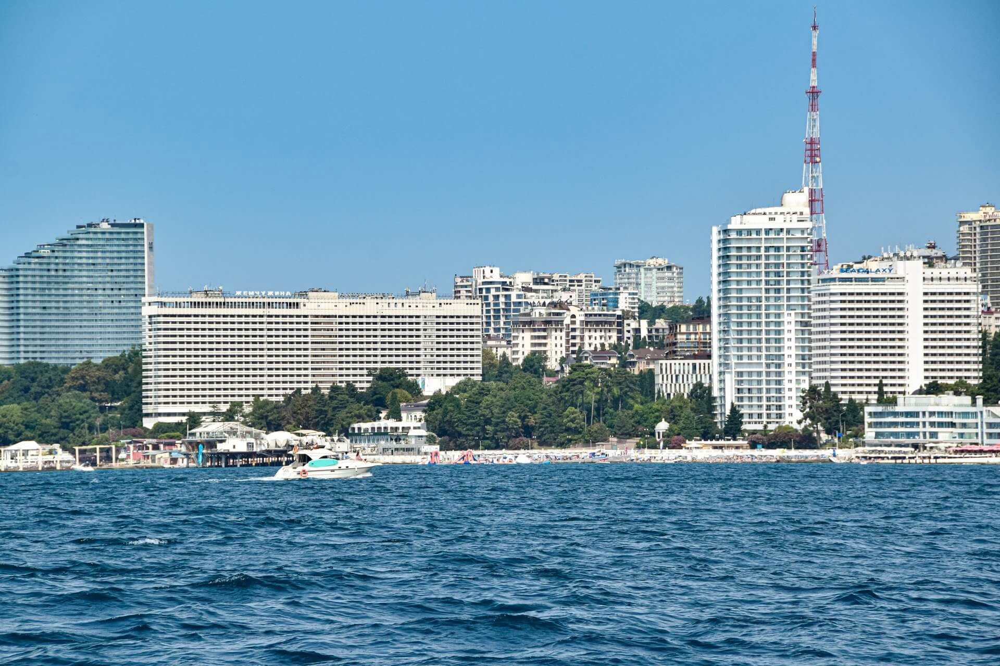
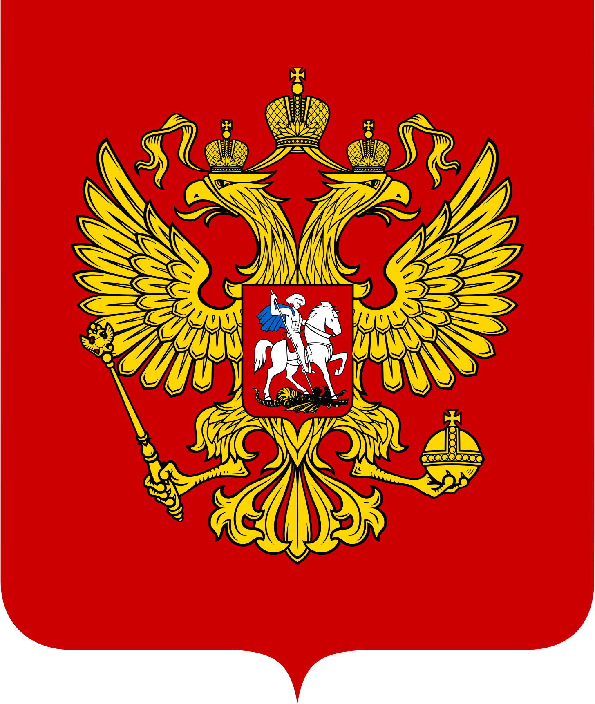
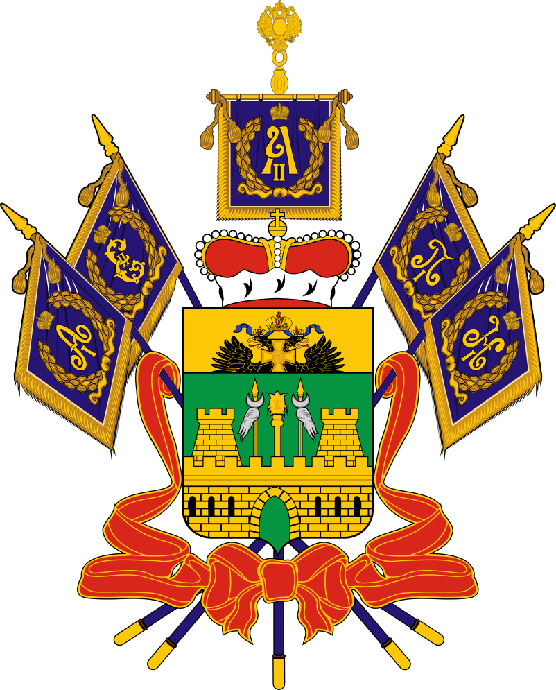
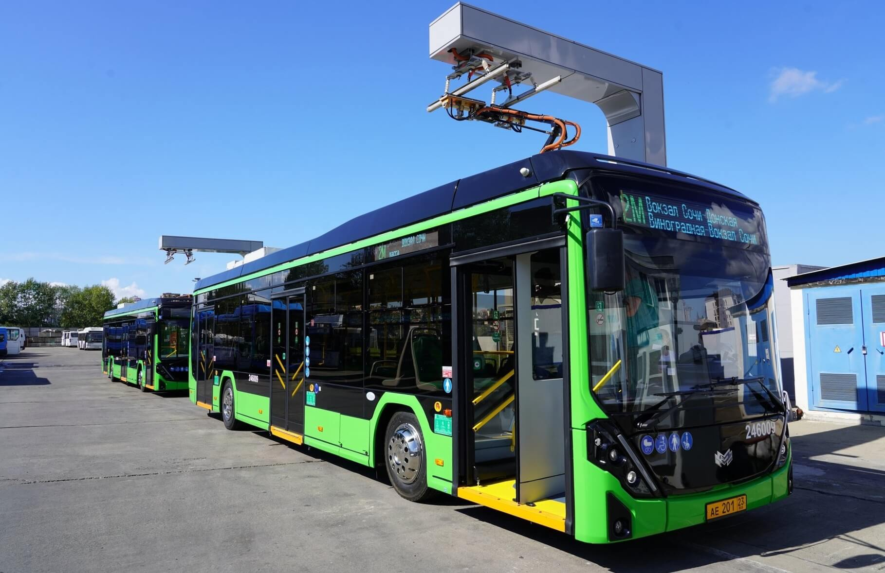

НДФЛ
Бюджет города Сочи на 2025 год и плановый период 2026 и 2027 годов
СО
ЧИ
Уважаемые сочинцы!

Принимая во внимание, что сам документ является достаточно сложным, объемным и содержащим много информации, зачастую понятной только профессиональному сообществу, мы подготовили для Вас контент о бюджете города Сочи на трехлетний период в доступной и понятной форме.
Здесь Вы ознакомитесь с основными целями, задачами и приоритетными направлениями бюджетной, налоговой и долговой политики города Сочи, узнаете о главных направлениях бюджета, а также о планируемых к реализации на ближайшие годы мероприятиях в рамках муниципальных программ.
А.Г. Прошунин
Глоссарий
Поступающие в бюджет денежные средства на безвозмездной основе из бюджетов других уровней (межбюджетные трансферты), от физических и юридических лиц.
Совокупность всех бюджетов в Российской Федерации: федерального, региональных, местных, государственных внебюджетных фондов.
Предельные объемы денежных средств, предусмотренных в соответствующем финансовом году для исполнения бюджетных обязательств.
Бюджетные средства, направляемые на создание или увеличение за счет средств бюджета стоимости государственного (муниципального) имущества.
Обязательства, возникающие из государственных (муниципальных) заимствований, гарантий по обязательствам третьих лиц, другие обязательства в соответствии с видами долговых обязательств, принятые на себя Российской Федерацией, субъектом Российской Федерации или муниципальным образованием.
Орган государственной власти (государственный орган), орган управления государственным внебюджетным фондом, орган местного самоуправления, орган местной администрации, а также наиболее значимое учреждение науки, образования, культуры и здравоохранения, указанное в ведомственной структуре расходов бюджета, имеющие право распределять бюджетные ассигнования и лимиты бюджетных обязательств между подведомственными распорядителями и (или) получателями бюджетных средств, если иное не установлено Бюджетным Кодексом Российской Федерации.
Межбюджетные трансферты, предоставляемые на безвозмездной и безвозвратной основе без установления направлений их использования.
Поступающие в бюджет денежные средства. К доходам бюджетов относятся налоговые доходы, неналоговые доходы и безвозмездные поступления.
Сумма задолженностей без деталей начисления, объединенная в одном счёте. Налоговый орган потом самостоятельно распределяет оплаченные суммы по нужным категориям.
Является составной частью системы «Электронный бюджет» и предоставляет в режиме реального времени необходимую информацию о бюджете и бюджетном процессе в Российской Федерации, а также позволяет принимать участие всем заинтересованным гражданам в управлении бюджетным процессом.
Общее название, используемое для обозначения совокупности практик вовлечения граждан в бюджетный процесс в Российской Федерации, объединенных идеологией гражданского участия, а также сфера государственного и муниципального регулирования участия населения в определении и выборе проектов, финансируемых за счет средств соответствующих бюджетов и последующем контроле за реализацией отобранных проектов со стороны граждан.
Свод бюджетов бюджетной системы Российской Федерации на соответствующей территории (за исключением бюджетов государственных внебюджетных фондов) без учета межбюджетных трансфертов между этими бюджетами.
Средства, предоставляемые одним бюджетом бюджетной системы Российской Федерации другому бюджету бюджетной системы Российской Федерации.
Два финансовых года, следующие за очередным финансовым годом.
Орган государственной власти (местного самоуправления), орган управления государственным внебюджетным фондом, или находящееся в ведении ГРБС казенное учреждение, имеющий(ее) право на исполнение своих функций за счет средств соответствующего бюджета.
Выплачиваемые из бюджета денежные средства, за исключением средств, являющихся в соответствии с Бюджетным Кодексом Российской Федерации источниками финансирования дефицита бюджета.
Принудительное сокращение расходов бюджета. Представляет собой равномерное сокращение расходов в соответствии с ранее уменьшившимися доходами бюджета.
Бюджетные средства, предоставляемые бюджету другого уровня бюджетной системы Российской Федерации, физическому или юридическому лицу на условиях долевого финансирования целевых расходов. Субсидии носят обязательный целевой характер.
Бюджетные средства, предоставляемые бюджету другого уровня бюджетной системы Российской Федерации на безвозмездной и безвозвратной основах на осуществление определенных целевых расходов.
Проект, обеспечивающий достижение целей, целевых и дополнительных показателей, выполнение задач национального проекта и (или) достижение иных целей и показателей, выполнение иных задач по поручению и (или) указанию Президента Российской Федерации, поручениям Председателя Правительства Российской Федерации, Правительства Российской Федерации, решению Совета, президиума Совета, поручению куратора соответствующего национального проекта.
(в секторе государственного управления)
Осуществление участниками бюджетного процесса бюджетных
операций, необходимых для выполнения их бюджетных
полномочий, установленных бюджетным законодательством
Российской Федерации, а также принятие мер
по повышению качества их исполнения.
Совокупность знаний, навыков и установок в сфере финансового поведения человека, ведущих к улучшению благосостояния и повышению качества жизни.
Система ведения бухгалтерского учета, в которой все филиалы, отделения, представительства и другие юридические лица входят в единую сеть, а бухгалтерия ведется централизованно, в одном месте.
Понятие бюджета
форма образования и расходования денежных средств, предназначенных для финансового обеспечения задач и функций государства и местного самоуправления
Доходная часть
Расходная часть
Источники финансирования дефицита бюджета

Бюджетная политика включает в себя определение соотношения между доходной и расходной частями бюджета
Сбалансированный бюджет
Профицитный бюджет
Дефицитный бюджет
Бюджетная система
— основанная на экономических отношениях и государственном устройстве Российской Федерации, регулируемая законодательством Российской Федерации совокупность федерального бюджета, бюджетов субъектов Российской Федерации, местных бюджетов и бюджетов государственных внебюджетных фондов.
Функционирование бюджетной системы Российской Федерации основано на принципах, закрепленных в Бюджетном кодексе Российской Федерации. Являясь исходными положениями, данные принципы лежат в основе построения бюджетов всех уровней в единую систему и отражают специфику бюджетной деятельности как особого вида государственного управления.
Бюджетный процесс и его этапы
— деятельность по подготовке проектов бюджетов, утверждению, исполнению бюджетов, контролю исполнения, осуществлению бюджетного учета, составлению, внешней проверке, рассмотрению и утверждению бюджетной отчетности.
НДФЛ
Земельный налог
Налог на имущество
Транспортный налог

Образование
Культура
Спорт и физическая культура
Комфортная городская среда


О городе‑курорте
Об этом свидетельствуют сохранившиеся на территории Сочи следы открытых и пещерных стоянок древнего человека. Сохранились остатки очагов, обложенных камнями, костров и ям, собрана большая коллекция орудий труда. Учёные считают, что они пришли через Колхиду (Западная Грузия) из Малой Азии. За свою многовековую историю Черноморское побережье Кавказа пережило влияние и слияние многих этносов и культур. Тут побывали скифы, древние греки, римляне.
В начале VI в. своё влияние на восточные берега Чёрного моря распространили византийцы. Сохранившиеся в районе города Сочи и его окрестностях крепости с характерной византийской техникой кладки, и обнаруженные здесь памятники христианского зодчества позволяют предположить исследователям, что, возможно, именно здесь и проходила северо-восточная граница Византийской империи. Византийцы принесли сюда христианство, утвердившееся в VII-XII вв.
Позже на месте Навагинского укрепления (форт Александрия) был основан сначала Даховский посад, и наконец — посад Сочи. Коренные жители — убыхи, шапсуги, абазины были вынуждены оставить родные земли, началось их массовое переселение в Турцию и другие страны Ближнего Востока, на равнинные земли Кубани.
На освободившиеся земли Черноморского побережья Кавказа шел поток русских переселенцев, украинцев, белорусов, греков. В то же время Сочи начинают заселять грузины, молдаване, немцы, эстонцы. На пустующие земли восточного берега Черного моря бежали от геноцида армяне, проживавшие в Турции.
В 1898 году начинает свою работу специальная комиссия по изучению Черноморского побережья Кавказа и его лечебных факторов.
Весной 1918 года в Сочинском округе были осуществлены первые социалистические преобразования: национализация земли, курортов, гостиниц, имений, промышленных предприятий.
В 1941 году развитие курорта было прервано Великой Отечественной Войной. Уже к августу в Сочи действовало 42 госпиталя на 12,6 тысяч коек. Сочи становится городом-госпиталем. За годы войны в сочинских госпиталях восстановили свое здоровье более 300 тысяч солдат и офицеров действующей армии. За этот подвиг милосердия в 1980 году город Сочи был награжден орденом Отечественной войны I степени.
В конце 1960-х годов утвержден новый генеральный план развития Сочи, рассчитанный на 25 лет (1967-1992). Его особенностью было то, что в нем предусматривалось параллельное развитие и города, и курорта. К сожалению, воплотить в жизнь этот план в полном объеме не удалось, но многое тогда все же было построено и до сих пор служит людям.
После 2007 года город Сочи получил мощный импульс к новому, небывалому рывку в своем развитии, связанному с реализацией на территории города-курорта олимпийского проекта.
Богатое наследие стало основой для последующего устойчивого развития города Сочи не только как круглогодичного курорта высшего уровня, но и как мирового спортивного, делового и культурного центра.
Город Сочи как объект административно-территориального устройства Краснодарского края состоит из 4 внутригородских районов (Адлерский район, Лазаревский район, Хостинский район, Центральный район) и 1 посёлка городского типа (Дагомыс). Районы, сельские и поселковый округа, поселки городского типа как административно-территориальные единицы Сочи не являются муниципальными образованиями. Администрации внутригородских районов непосредственно подчиняются главе администрации города Сочи.
Численность населения города Сочи на 1 января 2024 года составляет
Протяженность береговой полосы города Сочи
3/5 всей территории города особо охраняемые заповедники
Административно-территориальное деление
внутригородских районов
посёлок городского типа
Численность населения
городское — 84,3%
сельское — 15,7%
Лазаревский район
Хостинский район
Центральный район
Сириус
Адлерский район

Основные показатели социально-экономического развития
Прогноз социально-экономического развития муниципального образования городской округ город-курорт Сочи Краснодарского края является документом стратегического планирования, разрабатывается ежегодно на основе сценарных условий социально-экономического развития Российской Федерации, стратегии социально-экономического развития Краснодарского края и муниципального образования городской округ город-курорт Сочи Краснодарского края с учетом методических рекомендаций Министерства экономики Краснодарского края, а также статистической отчетности предшествующих лет и истекшего периода отчетного года.

2023
2024
2025
2026
2027

2023
2024
2025
2026
2027

2023
2024
2025
2026
2027

2023
2024
2025
2026
2027

2023
2024
2025
2026
2027

2023
2024
2025
2026
2027

2023
2024
2025
2026
2027

2023
2024
2025
2026
2027

2023
2024
2025
2026
2027

2023
2024
2025
2026
2027

2023
2024
2025
2026
2027

2023
2024
2025
2026
2027
Основные направления бюджетной, налоговой и долговой политики

Обеспечение роста бюджетных доходов, в том числе за счет повышения собираемости налогов и иных обязательных платежей, развитие налогового потенциала, совершенствование системы администрирования бюджетных доходов, снижение уровня задолженности
Поддержка реального сектора экономики, стимулирование инвестиционной и предпринимательской активности хозяйствующих субъектов, содействие субъектам малого и среднего предпринимательства выходу на онлайн-платформы
Продолжение работы по внедрению и наполнению единой муниципальной информационной системы на базе геоинформационных технологий по учету, анализу и эффективному использованию муниципального имущества
Оптимизация системы налогообложения объектов недвижимого имущества исходя из кадастровой стоимости данных объектов посредством актуализации результатов государственной кадастровой оценки объектов недвижимости и уточнения их площади
Проведение информационной кампании, направленной на повышение налоговой грамотности населения
Проведение оценки эффективности налоговых льгот (пониженных ставок) по местным налогам
Проведение систематической работы по выявлению:
Проведение систематического мониторинга платежей в разрезе доходных источников и бюджетообразующих хозяйствующих субъектов
Обеспечение сбалансированности и устойчивости бюджета города Сочи
Повышение качества управления бюджетным процессом главными распорядителями бюджетных средств
Повышение эффективности бюджетных расходов, в том числе за счет оптимизации расходов, максимально эффективного использования субсидий
Увеличение объема привлеченных средств из вышестоящих бюджетов
Оптимизация бюджетных расходов на муниципальное управление и содержание бюджетной сети
Вовлечение институтов гражданского общества в бюджетный процесс, в том числе обеспечение открытости и доступности информации о муниципальных финансах широкому кругу пользователей

Поддержание умеренной долговой нагрузки на городской бюджет
Соблюдение ограничений по объему муниципального долга и расходов на обслуживание муниципального долга, установленных бюджетным законодательством Российской Федерации, при осуществлении заимствований
Проведение эффективной долговой политики, ориентированной на среднесрочные и долгосрочные заимствования, равномерное распределение нагрузки по погашению долговых обязательств, недопущение возникновения просроченной задолженности по погашению и обслуживанию долговых обязательств
Минимизация расходов на обслуживание муниципального долга с учетом ситуации на финансовом рынке
Оптимизация расходов на обслуживание долговых обязательств
Обеспечение прозрачности процессов управления муниципальным долгом и раскрытие информации о нем
Основные характеристики бюджета
| Показатель | 2023 отчет |
2024 план* |
2025 план** |
2026 план** |
2027 план** |
|---|---|---|---|---|---|
| Доходы, всего | 35 149,7 | 34 480,3 | 63 958,5 | 26 873,1 | 27 622,4 |
| Налоговые доходы | 8 706,5 | 9 499,5 | 11 478,0 | 12 215,0 | 12 841,0 |
| Неналоговые доходы | 3 609,6 | 3 883,9 | 3 605,1 | 3 648,8 | 3 718,4 |
| Безвозмездные поступления | 22 833,6 | 21 096,9 | 48 875,4 | 11 009,3 | 11 063,0 |
| Расходы, всего | 35 408,7 | 36 754,1 | 64 195,7 | 28 632,3 | 27 181,6 |
| Дефицит (-)/профицит | -259,0 | -2 273,8 | -237,2 | -1 759,2 | 440,8 |
| Источники финансирования дефицита городского бюджета | 259,0 | 2 273,8 | 237,2 | 1 759,2 | -440,8 |
* Уточненный план на 01.10.2024
** План в соответствии с решением о бюджете от 26.12.2024 № 136 в первоначальной редакции
Доходы бюджета
ожидаемые доходы городского бюджета в 2025 году
+20,4% по сравнению с планом на 01.01.2024
Безвозмездные поступления из вышестоящих бюджетов
Налоговые доходы
Неналоговые доходы


| Наименование доходов | 2023 отчет |
2024 план* |
2025 план** |
2026 план** |
2027 план** |
|---|---|---|---|---|---|
| Налоговые доходы, всего | 8 706,5 | 9 499,5 | 11 478,0 | 12 215,0 | 12 841,0 |
| Налог на прибыль организаций | 639,6 | 451,4 | 705,0 | 735,6 | 738,4 |
| Налог на доходы физических лиц | 3 536,3 | 3 780,9 | 4 461,4 | 4 805,6 | 5 164,2 |
| Единый налог на вмененный доход для отдельных видов деятельности | -16,0 | - | - | - | - |
| Налог, взимаемый в связи с применением упрощенной системы налогообложения | 2 245,2 | 2 716,1 | 2 997,2 | 3 275,0 | 3 470,5 |
| Доходы от уплаты акцизов на нефтепродукты | 135,5 | 127,0 | 133,1 | 138,4 | 138,5 |
| Налог, взимаемый в связи с применением патентной системы налогообложения | 230,4 | 486,2 | 487,2 | 500,0 | 520,0 |
| Единый сельскохозяйственный налог | 10,0 | 8,8 | 11,1 | 11,9 | 12,9 |
| Налог на имущество организаций | 335,1 | 353,5 | 369,4 | 387,9 | 407,3 |
| Налог на имущество физических лиц | 807,6 | 703,7 | 873,4 | 900,1 | 910,0 |
| Земельный налог | 660,4 | 736,5 | 785,7 | 800,5 | 815,2 |
| Государственная пошлина | 122,4 | 135,4 | 154,5 | 160,0 | 164,0 |
| Туристический налог | - | - | 500,0 | 500,0 | 500,0 |
* Уточненный план на 01.10.2024
** План в соответствии с решением о бюджете от 26.12.2024 № 136 в первоначальной редакции
| Наименование доходов | 2023 отчет |
2024 план* |
2025 план** |
2026 план** |
2027 план** |
|---|---|---|---|---|---|
| Неналоговые доходы, всего | 3 609,6 | 3 884,0 | 3 605,1 | 3 648,8 | 3 718,4 |
| Доходы, получаемые в виде арендной платы за земли | 2 553,9 | 2 600,0 | 2 650,0 | 2 700,0 | 2 750,0 |
| Доходы от сдачи в аренду имущества | 89,0 | 100,0 | 100,0 | 100,0 | 100,0 |
| Плата за негативное воздействие на окружающую среду | 21,1 | 15,0 | 15,0 | 15,0 | 15,0 |
| Штрафы, санкции, возмещение ущерба | 145,8 | 113,5 | 130,8 | 135,0 | 141,0 |
| Доходы от продажи земельных участков | 121,3 | 363,9 | 175,0 | 160,0 | 172,0 |
| Прочие неналоговые доходы | 678,5 | 691,6 | 534,3 | 538,8 | 540,4 |
* Уточненный план на 01.10.2024
** План в соответствии с решением о бюджете от 26.12.2024 № 136 в первоначальной редакции
| Наименование налога |
Вышестоящие бюджеты  |
Бюджет города Сочи |
|---|---|---|
| Налог на имущество физических лиц | - | 100 |
| Земельный налог | - | 100 |
| Арендная плата | - | 100 |
| Доходы от продажи муниципального имущества | - | 100 |
| Налог, взимаемый в связи с применением патентной системы | - | 100 |
| Единый сельскохозяйственный налог | - | 100 |
| Туристический налог | - | 100 |
| Транспортный налог | 100 | - |
| Налог на доходы физических лиц | 78 | 22 |
| Налог на прибыль организаций | 95 | 5 |
| Налог на имущество организаций | 97 | 3 |
На 2025 год установлен дифференцированный норматив отчислений в бюджет города Сочи от акцизов на автомобильный и прямогонный бензин, дизельное топливо, моторные масла для дизельных и (или) карбюраторных (инжекторных) двигателей, производимых на территории Российской Федерации — 0,4972 (на 2023 год — 0,4983).
Налог на доходы физических лиц
Налог, взимаемый в связи с применением упрощенной системы налогообложения
Доходы, получаемые в виде арендной платы за землю
Налог на имущество физических лиц
Земельный налог
Налог на прибыль организаций
Налог, взимаемый в связи с применением патентной системы налогообложения
Налог на имущество организаций
Доходы от продажи земельных участков
Государственная пошлина
Доходы от уплаты акцизов на нефтепродукты
Штрафы, санкции, возмещение ущерба
Доходы от сдачи в аренду имущества
Плата за негативное воздействие на окружающую среду
Единый сельскохозяйственный налог
Прочие неналоговые доходы
* За исключением туристического налога
Предприятия потребительского рынка и услуг
Предприятия санаторно-курортной сферы
Организации, представляющие услуги в сфере образования, культуры и спорта
Предприятия транспорта и дорожного хозяйства
Предприятия сферы строительства
Предприятия жилищно-коммунальной сферы
(без учета поступлений из бюджета Краснодарского края) в расчете на одного жителя в городе Сочи на 1 октября 2024 года:
| Наименование межбюджетного трансферта | 2025 план** |
2026 план** |
2027 план** |
|---|---|---|---|
| Субсидии всего, в том числе: | 40 757,6 | 2 637,3 | 2 379,0 |
| Организация бесплатного горячего питания обучающихся по программам начального общего образования в муниципальных общеобразовательных организациях | 393,0 | 378,9 | 383,8 |
| Организация и обеспечение бесплатным питанием обучающихся с ограниченными возможностями здоровья в муниципальных общеобразовательных организациях | 21,2 | 29,0 | 30,1 |
| Предоставление социальных выплат молодым семьям на приобретение (строительство) жилья | 10,5 | 11,8 | 13,2 |
| Формирование и содержание муниципальных архивов | 0,0 | 1,1 | 0,0 |
| Организация водоотведения и водоснабжения | 2 504,5 | 343,1 | 0,0 |
| Строительство, реконструкция, техническое перевооружение, приобретение объектов общего образования | 3 010,9 | 1 472,8 | 1 928,2 |
| Обустройство мест массового отдыха на территориях муниципальных образований, в которых ранее был введен курортный сбор | 105,6 | 0,0 | 0,0 |
| Строительство и реконструкция объектов водоотведения | 33 439,6 | 167,0 | 0,0 |
| Обеспечение инженерно-технической защищенности муниципальных общеобразовательных организаций | 0,0 | 1,6 | 0,0 |
| Обеспечение развития и укрепления материально-технической базы домов культуры в населенных пунктах с численностью населения до 50 тыс. человек | 1,4 | 0,2 | 0,9 |
| Проектирование и строительство стандартного жилья | 826,3 | 114,0 | 0,0 |
| Создание модельных библиотек и модернизация библиотек в части комплектования книжных фондов | 25,3 | 2,4 | 2,5 |
| Обеспечение условий для развития физической культуры и массового спорта в части оплаты труда инструкторов по спорту | 3,9 | 3,9 | 3,9 |
| Организация отдыха детей в каникулярное время | 2,2 | 2,2 | 2,2 |
| Содержание, капитальный ремонт и ремонт автомобильных дорог общего пользования местного значения | 197,0 | 0,0 | 0,0 |
| Организация транспортного обслуживания населения в границах городского округа, в том числе связанного с осуществлением регулярных перевозок пассажиров и багажа автомобильным транспортом по регулируемым тарифам | 216,2 | 109,3 | 14,2 |
| Субвенции всего, в том числе: | 8 017,8 | 8 372,1 | 8 684,0 |
| Предоставление социальной поддержки отдельным категориям работников отрасли «Физическая культура и спорт» | 2,8 | 2,8 | 2,8 |
| Образование и организация деятельности административных комиссий | 2,0 | 2,0 | 2,0 |
| Поддержка сельскохозяйственного производства | 1,3 | 1,4 | 1,4 |
| Обеспечение одноразовым бесплатным питанием учащихся из многодетных семей в муниципальных общеобразовательных организациях | 62,0 | 64,8 | 68,0 |
| Обеспечение бесплатным двухразовым питанием детей-инвалидов (инвалидов), получающих образование в муниципальных общеобразовательных организациях | 6,8 | 7,1 | 7,4 |
| Обеспечение жилыми помещениями детей-сирот и детей, оставшихся без попечения родителей, включая ведение и формирование списков лиц, подлежащих обеспечению жилыми помещениями | 424,0 | 362,1 | 361,9 |
| Выплаты компенсации части родительской платы за присмотр и уход за детьми, посещающими организации дошкольного образования | 70,8 | 70,8 | 72,0 |
| Компенсация расходов на оплату жилых помещений педагогическим работникам муниципальных образовательных организаций, проживающим и работающим в сельских населенных пунктах | 4,2 | 4,4 | 4,5 |
| Строительство зданий для размещения фельдшерско-акушерских пунктов, фельдшерских пунктов, врачебных амбулаторий и офисов врача общей практики | 0,0 | 23,7 | 102,5 |
| Осуществление деятельности по обращению с животными без владельцев | 23,3 | 23,3 | 23,3 |
| Финансовое обеспечение получения общедоступного и бесплатного образования в муниципальных дошкольных и общеобразовательных организациях | 6 706,4 | 7 147,5 | 7 367,2 |
| Финансовое обеспечение получения образования в частных дошкольных и общеобразовательных организациях | 28,6 | 31,5 | 34,0 |
| Материально-техническое обеспечение пунктов проведения экзаменов для государственной итоговой аттестации по образовательным программам общего образования и выплата педагогическим работникам компенсации за работу по подготовке и проведению указанной государственной итоговой аттестации | 21,7 | 22,8 | 22,9 |
| Обеспечение отдыха детей в каникулярное время в профильных лагерях | 12,9 | 13,5 | 14,2 |
| Выплаты ежемесячного денежного вознаграждения за классное руководство педагогическим работникам муниципальных общеобразовательных организаций | 242,4 | 243,7 | 244,2 |
| Организация транспортного обслуживания населения и установление регулируемых тарифов на перевозку пассажиров и багажа автомобильным транспортом | 1,8 | 1,9 | 1,9 |
| Осуществление государственного надзора и контроля | 8,4 | 8,8 | 8,8 |
| Оказание помощи лицам, находящимся в состоянии алкогольного, наркотического или иного токсического опьянения, включая создание специализированных организаций для оказания помощи указанным лицам | 90,2 | 18,2 | 18,2 |
| Реализация мероприятий в области социальной политики | 306,9 | 319,8 | 325,5 |
| Осуществление прочих мероприятий (формирование списков граждан, жилые помещения которых утрачены в результате чрезвычайных ситуаций), составление списков кандидатов в присяжные заседатели федеральных судов общей юрисдикции, регулирование тарифов в сфере холодного водоснабжения, водоотведения) | 1,3 | 2,0 | 1,3 |
| Иные межбюджетные трансферты всего, в том числе: | 100,0 | 0,0 | 0,0 |
| Ликвидация последствий чрезвычайных ситуаций на автомобильных дорогах | 100,0 | 0,0 | 0,0 |
*Объем безвозмездных поступлений в бюджет города Сочи будет уточнен в ходе исполнения бюджета города Сочи после их распределения соответствующими правовыми актами Краснодарского края.
** План в соответствии с решением о бюджете от 26.12.2024 № 136 в первоначальной редакции
2025
2026
2027
Расходы бюджета
2025 год
2026 год
2027 год
(96,5%)
(92,5%)
(92,1%)
в том числе
в программном формате
Капитальные вложения
Предоставление субсидий бюджетным, автономным учреждениям на выполнение муниципального задания
Закупка товаров, работ и услуг для обеспечения муниципальных нужд
Расходы на выплаты персоналу ОМСУ и казенных учреждений
Социальное обеспечение населения
Обслуживание муниципального долга
Иные бюджетные ассигнования
по муниципальным программам
по разделам (подразделам) функциональной структуры расходов
по ведомствам
Общегосударственные вопросы
Национальная экономика
Жилищно-коммунальное хозяйство
Образование
Культура, кинематография
Социальная политика
Физическая культура и спорт
Прочие расходы
| Наименование показателей | 2023 отчет |
2024 план* |
2025 план** |
2026 план** |
2027 план** |
|---|---|---|---|---|---|
| Всего: | 35 408,7 | 37 266,9 | 64 195,7 | 28 632,3 | 27 181,6 |
| Общегосударственные вопросы | 1 908,5 | 1 829,9 | 2 174,9 | 2 411,9 | 2 203,4 |
| Национальная безопасность и правоохранительная деятельность | 826,7 | 1 325,4 | 741,4 | 591,0 | 526,4 |
| Национальная экономика | 6 100,0 | 6 926,2 | 3 477,1 | 2 944,2 | 2 836,3 |
| Жилищно-коммунальное хозяйство | 6 480,9 | 11 045,2 | 38 995,1 | 2 214,6 | 1 487,8 |
| Охрана окружающей среды | 12,9 | 284,4 | 252,7 | 252,3 | 252,3 |
| Образование | 17 089,9 | 12 030,0 | 14 082,3 | 14 618,7 | 13 322,5 |
| Культура, кинематография | 1 093,2 | 1 331,3 | 1 408,6 | 1 404,4 | 1 428,3 |
| Здравоохранение | 8,0 | 82,3 | 0,0 | 23,7 | 102,5 |
| Социальная политика | 729,0 | 1 026,8 | 1 181,6 | 946,4 | 961,2 |
| Физическая культура и спорт | 1 063,5 | 1 210,6 | 1 713,3 | 2 498,8 | 3 042,8 |
| Средства массовой информации | 95,6 | 113,6 | 83,6 | 86,0 | 86,0 |
| Обслуживание государственного (муниципального) долга | 0,5 | 61,2 | 85,1 | 85,0 | 56,5 |
| Условно утвержденные расходы | x | x | x | 555,3 | 875,6 |
* Уточненный план на 01.10.2024
** План в соответствии с решением о бюджете от 26.12.2024 № 136 в первоначальной редакции
Дорожное хозяйство
Социальная сфера
ЖКХ и благоустройство
* В общих расходах, за исключением финансовых вложений в строительство объектов водоотведения
Дорожное хозяйство
Социальная сфера
ЖКХ и благоустройство
— это распределение бюджетных ассигнований, предусмотренных решением о бюджете на соответствующий финансовый год главным распорядителям бюджетных средств, по разделам, подразделам, целевым статьям и видам расходов бюджетной классификации Российской Федерации.
| Наименование показателей | 2023 отчет |
2024* план* |
2025 план** |
2026 план** |
2027 план** |
|---|---|---|---|---|---|
| Всего: | 35 408,7 | 37 266,9 | 64 195,7 | 28 632,3 | 27 181,6 |
| Городское Собрание Сочи | 52,7 | 55,1 | 60,2 | 62,9 | 62,9 |
| Администрация города Сочи | 2 334,0 | 2 677,7 | 2 711,1 | 2 570,1 | 2 476,2 |
| Департамент по финансам и бюджету | 144,7 | 213,2 | 350,1 | 419,5 | 419,5 |
| Управление финансового контроля | 3,4 | x | 16,5 | 17,9 | 17,9 |
| Контрольно-счетная палата | 27,1 | 25,7 | 27,5 | 28,7 | 28,9 |
| Департамент строительства | 9 103,9 | 5 192,4 | 4 649,2 | 4 168,8 | 2 811,3 |
| Департамент имущественных отношений | 3 553,6 | 477,6 | 521,0 | 463,6 | 463,6 |
| Избирательная комиссия | 1,9 | x | x | x | x |
| Департамент городского хозяйства | 1 748,9 | 2 136,8 | 991,8 | 494,1 | 494,1 |
| Управление по образованию и науке | 8 640,0 | 9 898,6 | 11 218,0 | 11 997,5 | 12 241,8 |
| Управление культуры | 1 359,7 | 1 542,0 | 1 841,8 | 1 951,5 | 1 951,3 |
| Департамент физической культуры и спорта | 747,6 | 754,8 | 891,6 | 958,8 | 1 001,1 |
| Управление по вопросам семьи и детства | 218,0 | 216,3 | 248,7 | 259,6 | 264,6 |
| Управление молодежной политики | 142,5 | 160,5 | 147,8 | 154,5 | 155,9 |
| Департамент транспорта и дорожного хозяйства | 3 999,6 | 4 400,6 | 1 735,4 | 1 197,4 | 1 089,4 |
| Администрация Адлерского района | 740,6 | 816,1 | 657,8 | 695,2 | 696,2 |
| Администрация Лазаревского района | 755,4 | 685,3 | 592,2 | 627,9 | 628,4 |
| Администрация Хостинского района | 623,2 | 678,8 | 545,2 | 569,5 | 570,7 |
| Администрация Центрального района | 892,2 | 1 017,9 | 766,8 | 842,5 | 845,7 |
| Департамент реализации проектов комплексного развития | 319,7 | 6 317,5 | 36 223,0 | 597,0 | 86,5 |
| Условно утвержденные расходы | x | x | x | 555,3 | 875,6 |
* Уточненный план на 01.10.2024
** План в соответствии с решением о бюджете от 26.12.2024 № 136 в первоначальной редакции
Муниципальные программы
Муниципальные программы являются комплексом мероприятий, которые согласовываются по срокам, целям, исполнителям и материально-технической базе. Программный бюджет отличается от традиционного тем, что все или почти все расходы включены в программы и каждая программа своей целью прямо связана с той или иной стратегической задачей.
Органы местного самоуправления утверждают порядок создания и оформления муниципальных программ.
Перечень муниципальных программ, действующих на территории города Сочи, утвержден в соответствии с постановлением администрации муниципального образования городской округ город-курорт Сочи Краснодарского края от 07.07.2021 г. № 1355.
Оценка эффективности реализации муниципальных программ проводится в соответствии с постановлением администрации муниципального образования городской округ город-курорт Сочи Краснодарского края от 17.06.2021 г. № 1155.
С перечнем муниципальных программ города Сочи, а также информацией о расходовании бюджетных средств в рамках этих программ, можно ознакомиться на сайте департамента по финансам и бюджету администрации города Сочи.
Муниципальные программы города Сочи*
2024
2025
2026
2027
Финансирование программы в 2025 году, всего
Бюджет города Сочи
Бюджет Краснодарского края
Федеральный бюджет

Субсидии на выполнение муниципального задания(в млн рублей)
Другие расходы(в млн рублей)
детских дошкольных учреждения
школ (гимназии, лицеи)
учреждения дополнительного образования
воспитанник
школьника
учащихся
На данный момент в общеобразовательных организациях города Сочи получают образование 78 495 учащихся. Из них программы начального общего образования освоили 33 989 школьника.
В рамках федерального проекта «Успех каждого ребёнка» национального проекта «Образование» в городе Сочи была реализована программа персонифицированного финансирования дополнительного образования детей. При общей численности 96 784 детей в возрасте от 5 до 18 лет, проживающих на территории города Сочи, 24 779 детей воспользовались сертификатами дополнительного образования, а это — 25,6% от общего количества детей.
| Обеспечение выполнения муниципального задания учреждениями образования | 7 170,6 |
| Оказание услуг, связанных с организацией питания обучающихся в образовательных организациях, в том числе для детей из многодетных семей и детей, родители которых призваны на военную службу по мобилизации | 782,6 |
| Денежная компенсация (20 000 рублей) за наём жилых помещений работникам образовательных учреждений | 89,5 |
| Обеспечение безопасности образовательных организаций — услуги лицензированной охраны | 401,8 |
| Обеспечение инженерно-технической защищенности и требований правил пожарной безопасности в образовательных организациях | 61,7 |
| Текущий ремонт, капитальный ремонт, подготовка к осенне-зимнему периоду, обработка территорий образовательных организаций | 68,9 |
| Ежемесячное денежное вознаграждение за классное руководство педагогическим работникам | 406,5 |
| Доплаты педагогическим работникам (в том числе до 35 лет) | 1 077,3 |
| Ежегодная денежная выплата педагогическим работникам к началу учебного года | 25,6 |
| Денежная компенсация горячего питания детям-инвалидам и детям с ограниченными возможностями здоровья в образовательных организациях | 43,0 |
| Обеспечение функционирования системы персонифицированного финансирования дополнительного образования детей | 112,4 |
| Школьное инициативное бюджетирование | 15,0 |
| Выплата компенсации части родительской платы за присмотр и уход за детьми в дошкольных образовательных учреждениях | 70,8 |
| Выполнение Перечня предложений и поручений граждан | 64,2 |
| Обеспечение деятельности (оказание услуг) централизованной бухгалтерии | 221,7 |
| Обеспечение деятельности органов местного самоуправления и муниципальных учреждений отрасли «Образование» | 151,1 |
| Прочие мероприятия в области образования | 338,2 |
| Региональный проект «Все лучшее детям», реализация мероприятий по модернизации щкольных систем образования | 123,6 |
| Региональный проект «Педагоги и наставники» | 24,7 |
В рамках реализации муниципальной программы в 2025 году учтены расходы на:
В рамках реализации государственной программы Краснодарского края «Развитие образования» предусмотрены расходы на приобретение движимого имущества в целях оснащения новых мест, вводимых в общеобразовательных организациях города Сочи.
В рамках реализации национального проекта «Молодежь и дети» предусмотрены расходы на:
Муниципальные программы города Сочи*
2024
2025
2026
2027
Финансирование программы в 2025 году, всего
Бюджет города Сочи
Бюджет Краснодарского края
| Организация работы лагерей с дневным пребыванием, труда и отдыха, палаточного отдыха в краевых и муниципальных профильных сменах на базе оздоровительных организаций, доставка организованных групп детей к местам отдыха и обратно | 40,6 |
| Организация, участие и проведение праздников, семинаров, фестивалей, конкурсов, экологических акций, конференций | 12,8 |
| Выплаты премий главы города Сочи одарённым школьникам, преподавателям за успехи в подготовке выпускников, в т.ч. премия главы города Сочи «Педагогический триумф» | 13,5 |
| Подарки первоклассникам | 8,0 |
| Мероприятия по предупреждению детского дорожно-транспортного травматизма | 0,6 |
В рамках реализации муниципальной программы в 2025 году участниками многодневных туристических походов станут 2 100 человек. Детям будет обеспечено питание и снаряжение туристическим инвентарем.
Летние лагеря труда и отдыха предоставят возможность досуга для 885 детей.
Передвижные палаточные лагеря примут в свои ряды 2 400 детей.
В рамках реализации государственной программы Краснодарского края «Дети Кубани» предусмотрены расходы на организацию отдыха детей города Сочи в каникулярное время на базе муниципальных учреждений, осуществляющих организацию отдыха детей в Краснодарском крае.
Муниципальные программы города Сочи*
2024
2025
2026
2027
Финансирование программы в 2025 году, всего
Бюджет города Сочи
Вышестоящие бюджеты
Субсидии на выполнение муниципального задания(в млн рублей)
Другие расходы(в млн рублей)
школ (искусств, музыкальных, художественных)
домов культуры
киноконцертных организаций
музеев
театра
творческо-методический центр
| Обеспечение выполнения муниципального задания учреждениями культуры | 1 529,4 |
| Проведение официальных городских культурно-массовых мероприятий, выставок, фестивалей конкурсов, а также оформление и обустройство мест массового отдыха | 48,1 |
| Выполнение Перечня предложений и поручений граждан | 11,7 |
| Комплектование библиотечных фондов муниципальных библиотек | 4,8 |
| Проведение текущего ремонта зданий и сооружений, укрепление материально-технической базы | 61,5 |
| Обеспечение безопасности учреждений — услуги лицензированной охраны и противодействие терроризму | 51,0 |
| Выплата работникам муниципальных учреждений ежемесячной социальной помощи на частичную компенсацию за наем жилых помещений | 6,9 |
| Выплата премий преподавателям, учащиеся которых достигли выдающихся успехов | 0,8 |
| Обеспечение деятельности централизованной бухгалтерии | 63,5 |
| Обеспечение деятельности органов местного самоуправления и муниципальных учреждений отрасли «Культура» | 89,6 |
| Региональный проект «Семейные ценности и инфраструктура культуры» | 28,1 |
В рамках реализации муниципальной программы в 2025 году учтены расходы на проведение официальных городских культурно-массовых мероприятий, в том числе проведение праздничных мероприятий, посвящённых Победе в Великой Отечественной войне 1941-1945 годов.
В рамках реализации государственной программы Краснодарского края «Развитие культуры» предусмотрены расходы на:
В рамках реализации национального проекта «Семья» предусмотрены расходы на создание модельных муниципальных библиотек.
Муниципальные программы города Сочи*
2024
2025
2026
2027
| Проведение туристических лагерей, походов, городских фестивалей и акций, конкурсов и других мероприятий | 11,5 |
| Выплата специальной именной премии главы города Сочи | 1,0 |
| Молодежный грантовый конкурс «Сочиняй смыслы» | 2,0 |
| Молодежное инициативное бюджетирование | 10,0 |
| Обеспечение деятельности органов местного самоуправления и муниципальных учреждений отрасли «Молодежная политика» | 91,5 |
В городе Сочи проживает 134 000 человек в возрасте от 14 до 35 лет, а это около 24% от общей численности населения города Сочи.
Главными задачами муниципальной программы являются: вовлечение молодежи в социальную практику и ее информирование о потенциальных возможностях саморазвития; обеспечение поддержки научной, творческой и предпринимательской активности молодежи; формирование целостной системы поддержки обладающей лидерскими навыками, инициативной и талантливой молодежи; гражданское образование и патриотическое воспитание молодежи, содействие формированию правовых, культурных и нравственных ценностей.
Ежегодное участие в региональном проекте «Социальная активность». В 2024 году в проект было вовлечено 82 415 человек, что более чем в 2 раза больше, чем в 2023 году.
Ежегодное проведение конкурса на соискание специальной молодежной именной премии главы города Сочи, по итогам которого 10 молодых людей в возрасте от 16 до 35 лет получают премию в размере по 100 тыс. рублей.
Ежегодное проведение широкомасштабных городских мероприятий для молодежи. 29 июня 2024 года на площади Флага был организован праздник в честь Дня молодежи, на котором происходили различного вида активности для молодежи, выступления творческих коллективов на специально установленной сцене, а также награждение молодых людей, особо отличившихся в реализации государственной молодежной политики на территории города Сочи. В мероприятии приняли участие порядка 2 500 человек из числа сочинской молодежи.
Ежегодное проведение муниципального грантового конкурса молодежных проектов «Сочиняй смыслы». В 2024 году гранты на реализацию своих проектов в пределах 200 тыс. рублей получили 13 молодых сочинцев в возрасте от 14 до 35 лет.
Открытие первого в России цифрового Дома «Юнармии» (март 2024 года). Это пространство более 250 м2, оснащенное для занятий военно-патриотических клубов.
Реализация молодежного инициативного бюджетирования. В 2024 году — 17 проектов на общую сумму 10 млн рублей.

Муниципальные программы города Сочи*

2024
2025
2026
2027
Финансирование программы в 2025 году, всего
Бюджет города Сочи
Бюджет Краснодарского края
Субсидии на выполнение муниципального задания(в млн рублей)
Другие расходы(в млн рублей)
учреждений дополнительного образования в области физической культуры и спорта
центр по работе с людьми с ограниченными возможностями
центр спортивно-массовой работы
| Обеспечение выполнения муниципального задания учреждениями образования | 763,0 |
| Участие и проведение физкультурных, спортивных и оздоровительных мероприятий | 8,9 |
| Укрепление материально-технической базы физкультурно-спортивных организаций | 0,9 |
| Обеспечение безопасности учреждений — услуги лицензированной охраны | 36,1 |
| Выполнение Перечня предложений и поручений граждан | 15,3 |
| Финансовая поддержка молодых и заслуженных тренеров физкультурно-спортивных организаций, осуществляющих подготовку спортивного резерва, инструкторов по спорту | 14,9 |
| Ежемесячная социальная помощь на частичную компенсацию найма жилых помещений | 3,6 |
| Выплата премии главы города Сочи лучшим спортсменам, тренерам, тренерам-преподавателям и инструкторам-методистам по адаптивной физической культуре и спорту по результатам конкурса «Поколение спорта» | 0,6 |
| Обеспечение деятельности централизованной бухгалтерии | 26,0 |
| Обеспечение деятельности органов местного самоуправления и муниципальных учреждений отрасли «Физическая культура и спорт» | 22,2 |
| Развитие спортивных сооружений в городе Сочи | 41,9 |
Отрасль «Физическая культура и спорт» города Сочи представлена 20 учреждениями, из которых 17 — это спортивные школы и школы олимпийского резерва.
На данный момент общая численность занимающихся в отрасли составляет 12 239 человека.
По программам спортивной подготовки обучаются 11 959 человек.
По спортивно-оздоровительным программам — 507 человек, из них:
городского уровня с участием 175 670 спортсменов
регионального уровня с участием 1 300 спортсменов
1 714 медалей
федерального уровня с участием 1 750 спортсменов
1 003 медали
международного уровня с участием 650 спортсменов
61 медаль
В рамках реализации муниципальной программы в 2025 году учтены расходы на:
В рамках реализации государственной программы Краснодарского края «Развитие физической культуры и спорта» предусмотрены расходы на:
Муниципальные программы города Сочи*

2024
2025
2026
2027
| Обеспечение доступности приоритетных объектов и услуг в приоритетных сферах жизнедеятельности инвалидов и других маломобильных групп населения города Сочи | 270,0 |
В рамках реализации муниципальной программы в 2025 году учтены расходы на создание в муниципальных дошкольных образовательных организациях условий для получения детьми-инвалидами качественного образования на приобретение интерактивных средств обучения.
Муниципальные программы города Сочи*
2024
2025
2026
2027
| Информационное и методическое обеспечение противодействия экстремизму и терроризму, мероприятия по предупреждению детского травматизма | 430,9 |
| Организация, проведение и информационное обеспечение этапов краевых фестивалей, конкурсов для несовершеннолетних, состоящих на профилактическом учете | 165,0 |
| Организация трудоустройства несовершеннолетних граждан в возрасте от 14 до 18 лет в свободное от учебы время | 5 411,2 |
| Организация и проведение мероприятий с участием несовершеннолетних | 230,0 |
| Организация и проведение мероприятий по профилактике семейного неблагополучия | 11,4 |
| Выплата 4 наставникам, добившимся положительных результатов в работе с несовершеннолетними, премии главы города Сочи «Лучший наставник» | 460,0 |
В рамках реализации муниципальной программы в 2025 году учтены расходы на:
Муниципальные программы города Сочи*
2024
2025
2026
2027
Финансирование программы в 2025 году, всего
Бюджет города Сочи
Бюджет Краснодарского края
| Обеспечение деятельности муниципальных учреждений | 16,1 |
| Благоустройство объектов курортной инфраструктуры за счет средств курортного сбора | 112,4 |
| Создание условий для развития туризма на территории города Сочи | 5,8 |
В рамках реализации муниципальной программы в 2025 году учтены расходы на:
В рамках реализации государственной программы Краснодарского края «Развитие санаторно-курортного и туристского комплекса» предусмотрены расходы на выполнение работ по обустройству и содержанию мест массового отдыха, пляжей и набережных общей площадью не менее 10 948,1 м2.

2011
2014
2017
2020
2023
2024*

2018
2019
2020
2021
2022
2023
2024*
Муниципальные программы города Сочи*

2024
2025
2026
2027
Финансирование программы в 2025 году, всего
Бюджет города Сочи
Бюджет Краснодарского края
Федеральный бюджет
| Предоставление жилых помещений различным категориям граждан | 419,1 |
| Предоставление социальных выплат на строительство и приобретение жилья гражданам, нуждающимся в улучшении жилищных условий | 33,6 |
| Обследование, проектирование, строительство и реконструкция жилых домов | 944,8 |
| Создание условий для массового строительства жилья, в том числе жилья экономкласса | 50,7 |
В рамках реализации муниципальной программы в 2025 году учтены расходы на:
В рамках реализации государственной программы Краснодарского края «Комплексное и устойчивое развитие Краснодарского края в сфере строительства и архитектуры» предусмотрены расходы на продолжение строительства многоквартирного жилого дома по ул. Вишневой в Центральном внутригородском районе.
В рамках реализации государственной программы Краснодарского края «Развитие жилищно-коммунального хозяйства» предусмотрены расходы на предоставление социальных выплат молодым семьям на приобретение (строительство) жилья.
Муниципальные программы города Сочи*
2024
2025
2026
2027
Финансирование программы в 2025 году, всего
Бюджет города Сочи
Бюджет Краснодарского края
| Поддержка, модернизация и капитальный ремонт объектов жилищного хозяйства | 39,7 |
| Поддержка, модернизация и капитальный ремонт объектов коммунального хозяйства | 69,6 |
| Улучшение жилищных условий отдельных категорий граждан | 0,9 |
| Модернизация систем коммунальной инфраструктуры | 307,9 |
| Обеспечение деятельности органов местного самоуправления и муниципальных учреждений | 195,6 |
В рамках реализации муниципальной программы в 2025 году учтены расходы на:
В рамках реализации государственной программы Краснодарского края «Развитие жилищно-коммунального хозяйства» предусмотрены расходы на модернизацию 13 объектов сети теплоснабжения.
Муниципальные программы города Сочи*
2024
2025
2026
2027
Финансирование программы в 2025 году, всего
Бюджет города Сочи
Бюджет Краснодарского края
| Поддержание технико-эксплуатационного и санитарного состояния автомобильных дорог общего пользования местного значения и обеспечение их соответствия требованиям технических регламентов, санитарных правил | 1 182,4 |
| Обеспечение деятельности муниципальных учреждений | 342,9 |
В рамках реализации муниципальной программы в 2025 году учтены расходы на:
В рамках реализации государственной программы Краснодарского края «Развитие сети автомобильных дорог Краснодарского края» предусмотрены расходы на ликвидацию последствий чрезвычайных ситуаций на автомобильных дорогах общего пользования местного значения.
Муниципальные программы города Сочи*
2024
2025
2026
2027
| Обеспечение доступа к информации о деятельности Городского Собрания Сочи | 4,5 |
| Обеспечение доступа к информации о деятельности отраслевых (функциональных) и территориальных органов администрации города Сочи | 26,7 |
| Обеспечение деятельности муниципальных учреждений | 52,4 |
В рамках реализации муниципальной программы в 2025 году учтены расходы на:
Муниципальные программы города Сочи*
2024
2025
2026
2027
| Мероприятия по предупреждению и ликвидации чрезвычайных ситуаций, стихийных бедствий и их последствий, а также содержание и эксплуатация муниципальной системы оповещения и системы оперативного контроля паводковых вод | 236,4 |
| Обеспечение функционирования системы видеонаблюдения и другие мероприятия в области обеспечения общественной безопасности | 322,7 |
| Обеспечение деятельности муниципальных учреждений | 279,4 |
| Формирование резерва материальных ресурсов для нужд гражданской обороны | 2,6 |
Приобретено, установлено и подключено к АПК «Безопасный город» 126 камер видеонаблюдения, в том числе:
Приобретено и установлено 112 камер видеонаблюдения на 12 пляжных территориях Адлерского и Хостинского внутригородских районов за счет средств курортного сбора.
Установлено 34 системы видеонаблюдения в общеобразовательных учреждениях города Сочи.
В соответствии с распоряжением департамента имущественных отношений муниципального образования городской округ город-курорт Сочи Краснодарского края от 29.05.2024 № 166-р утилизированы 53 устаревшие видеокамеры.
Приобретено и установлено 160 сиренно-речевых устройств и 9 комплектов радиодиспетчеров в рамках реализации второго этапа создания муниципальной автоматизированной системы централизованного оповещения населения города Сочи об угрозе возникновения или возникновения чрезвычайных ситуаций (проведены пуско-наладочные работы).
В рамках договорных отношений городу Сочи предоставлен доступ к комплексной системе видеонаблюдения в целях получения информации (видео в реальном времени, видеозапись, система распознавания и поиска лиц) в объеме 1 705 единиц видеонаблюдения, из которых:
Парк видеокамер АПК «Безопасный город» на текущий момент составляет 3 679 единиц, в том числе:
В рамках реализации муниципальной программы в 2025 году учтены расходы на:
В случае предоставления соответствующих средств из бюджета Краснодарского края в бюджет города Сочи в рамках запроса о дополнительной потребности в камерах возможна установка дополнительных камер видеонаблюдения в количестве до 300 единиц.
Муниципальные программы города Сочи*
2024
2025
2026
2027
| Сохранение, пропаганда и развитие историко-культурных традиций кубанского казачества | 0,9 |
| Патриотическое воспитание молодежи в казачьих обществах | 0,8 |
| Охрана общественного порядка казачьими обществами, в том числе организация деятельности муниципальной казачьей дружины | 66,1 |
В рамках реализации муниципальной программы в 2025 году учтены расходы на организацию деятельности муниципальной казачьей дружины численностью 50 человек и участие в охране общественного порядка силами 140 членов казачьих дружин на местах массового скопления граждан.
Муниципальные программы города Сочи*
2024
2025
2026
2027
Финансирование программы в 2025 году, всего
Бюджет города Сочи
Бюджет Краснодарского края
Федеральный бюджет
| Проектирование, строительство, реконструкция и иные мероприятия по водоснабжению и водоотведению | 263,3 |
| Региональный проект «Модернизация коммунальной инфраструктуры (Краснодарский край)» | 237,7 |
| Проектирование, строительство объектов инфраструктуры | 2 031,9 |
| Строительство и реконструкция объектов водоотведения | 33 607,6 |
| Обеспечение деятельности органов местного самоуправления и муниципальных учреждений | 82,5 |
В рамках реализации муниципальной программы в 2025 году учтены расходы на:
В рамках реализации государственной программы Краснодарского края «Развитие жилищно-коммунального хозяйства» предусмотрены расходы на:
В рамках реализации национального проекта «Инфраструктура для жизни» предусмотрены расходы на строительство магистрального водовода от резервуаров «Чайфабрика» до границ Адлерского внутригородского района.
Муниципальные программы города Сочи*
2024
2025
2026
2027
Финансирование программы в 2025 году, всего
Бюджет города Сочи
Бюджет Краснодарского края
| Оказание финансовой поддержки автотранспортным предприятиям города Сочи | 21,9 |
| Повышение эффективности работы городского транспорта общего пользования | 131,0 |
| Организация регулярных перевозок по регулируемым тарифам по муниципальным маршрутам регулярного сообщения | 647,4 |
| Обеспечение деятельности органов самоуправления и муниципальных учреждений | 64,6 |
В рамках реализации муниципальной программы в 2025 году учтены расходы на возмещение недополученных доходов автотранспортным предприятиям в связи с обеспечением частичного бесплатного проезда отдельным категориям работников социальной сферы и бесплатного проезда школьникам — детям участников специальной военной операции.
Действующая маршрутная сеть города Сочи состоит из 126 маршрутов регулярных перевозок, из которых:
Ежедневно на линии работает более 800 единиц
В городе Сочи реализуется масштабный проект, предусматривающий развитие газомоторной транспортной инфраструктуры. В рамках Концепции по развитию производства и использования электрического автомобильного транспорта в Российской Федерации на период до 2030 года на территории города Сочи:
Все эти меры дадут значительный импульс для развития экологически чистого транспорта общего пользования.
В рамках реализации государственной программы Краснодарского края «Социально-экономическое и инновационное развитие Краснодарского края» предусмотрены расходы на обеспечение уровня транспортного обслуживания населения, связанные с приобретением автобусов большого класса на газомоторном топливе.
Муниципальные программы города Сочи*
2024
2025
2026
2027
| Управление и распоряжение муниципальным имуществом | 3,1 |
| Обеспечение деятельности органов местного самоуправления и муниципальных учреждений | 98,8 |
В рамках реализации муниципальной программы в 2025 году учтены расходы на:
Муниципальные программы города Сочи*
2024
2025
2026
2027
| Оказание консультационной поддержки субъектам малого и среднего предпринимательства | 6,2 |
| Организация коворкинг-центра | 6,6 |
В рамках реализации муниципальной программы в 2025 году учтены расходы на оказание консультационной поддержки 370 субъектам малого и среднего предпринимательства, самозанятым гражданам, в том числе в сфере образования.
Муниципальные программы города Сочи*
2024
2025
2026
2027
| Развитие международных связей | 1,7 |
| Развитие городских имиджевых мероприятий и протокольно-организационное обеспечение | 12,4 |
| Развитие внешнеэкономических связей | 5,4 |
В рамках реализации муниципальной программы в 2025 году учтены расходы на:
Муниципальные программы города Сочи*
2024
2025
2026
2027
| Комплексное решение проблем развития органов территориального общественного самоуправления | 53,4 |
В рамках реализации муниципальной программы в 2025 году учтены расходы на выплаты руководителям 79 органов территориальных общественных самоуправлений города Сочи.
Муниципальные программы города Сочи*
2024
2025
2026
2027
Финансирование программы в 2025 году, всего
Бюджет города Сочи
Бюджет Краснодарского края
Муниципальные программы города Сочи*
2024
2025
2026
2027
| Разработка градостроительной и землеустроительной документации | 80,1 |
| Обеспечение деятельности муниципальных учреждений | 135,3 |
В рамках реализации муниципальной программы в 2025 году учтены расходы на:
Муниципальные программы города Сочи*
2024
2025
2026
2027
Финансирование программы в 2025 году, всего
Бюджет города Сочи
Бюджет Краснодарского края
Федеральный бюджет
| Проектирование, строительство, реконструкция сетей газоснабжения, теплоснабжения на территории города Сочи | 12,9 |
| Проектирование, строительство, реконструкция сетей электроснабжения и связи | 125,2 |
| Проектирование, строительство, реконструкция дорог общего пользования местного значения и сооружений на них | 58,3 |
| Обеспечение развития сети и инфраструктуры общеобразовательных школьных учреждений | 2 295,0 |
| Обеспечение развития сети и инфраструктуры объектов культуры | 48,9 |
| Обеспечение развития сети и инфраструктуры спортивных объектов | 436,1 |
| Обеспечение деятельности органов местного самоуправления и муниципальных учреждений | 156,9 |
| Проектирование, капитальный ремонт, реконструкция объектов муниципальной собственности | 51,2 |
| Региональный проект «Все лучшее детям» | 168,4 |
В рамках реализации муниципальной программы в 2025 году учтены расходы на строительство новых учреждений, а также продолжение строительства и проектно-изыскательские работы по следующим объектам:
В рамках реализации государственной программы Краснодарского края «Развитие общественной инфраструктуры» предусмотрены расходы на строительство новых учреждений, а также продолжение строительства и проектно-изыскательские работы по следующим объектам:
В рамках реализации национального проекта «Молодежь и дети» предусмотрены расходы на строительство блока начальной школы на 400 мест на территории МОБУ СОШ № 87 в п. Горное Лоо Лазаревского внутригородского района.
Муниципальные программы города Сочи*
2024
2025
2026
2027
| Развитие информационно-коммуникационных технологий органов местного самоуправления | 33,4 |
| Обеспечение деятельности муниципальных учреждений | 52,4 |
В рамках реализации муниципальной программы в 2025 году учтены расходы на развитие информационно-коммуникационных технологий, включающих своевременное техническое сопровождение и обновление установленного программного обеспечения, электронного документооборота, системы межведомственного электронного взаимодействия, обеспечение информационной безопасности, электронных подписей, а также на обеспечение доступа к этим ресурсам.
Муниципальные программы города Сочи*
2024
2025
2026
2027
| Озеленение | 587,5 |
| Санитарная очистка | 34,6 |
| Благоустройство мест захоронения | 76,0 |
| Благоустройство детских и спортивных площадок | 99,5 |
| Обеспечение деятельности муниципальных учреждений | 264,9 |
| Прочие мероприятия в области благоустройства | 75,2 |
В рамках реализации муниципальной программы в 2025 году учтены расходы на:
Муниципальные программы города Сочи*
2024
2025
2026
2027
Финансирование программы в 2025 году, всего
Бюджет города Сочи
Бюджет Краснодарского края
| Поддержка сельскохозяйственного производства | 1,3 |
| Проведение мероприятий и лечебно-профилактической работы | 32,1 |
| Обеспечение деятельности муниципальных учреждений | 43,8 |
В рамках реализации муниципальной программы в 2025 году учтены расходы на:
Муниципальные программы города Сочи*
2024
2025
2026
2027
| Компенсационное озеленение | 200,0 |
| Защита зеленых насаждений от вредителей и болезней | 20,0 |
| Обеспечение деятельности муниципальных учреждений | 32,7 |
В рамках реализации муниципальной программы в 2025 году учтены расходы на обеспечение деятельности муниципальных казенных учреждений:
Муниципальные программы города Сочи*
2024
2025
2026
2027
| Выполнение работ по благоустройству общественных территорий | 20,1 |
В рамках реализации муниципальной программы в 2025 году учтены расходы на разработку проектно-сметной документации на объекты городской среды.
Координаторы муниципальных программ
Если у Вас остались вопросы, ответы на которые не отражены в представленных материалах, или если есть собственные предложения и замечания по реализации программных мероприятий, координаторы муниципальных программ готовы к конструктивному диалогу, взаимодействию и совместной работе.
Образование
Дети Сочи
Культура
Молодежь Сочи
Физическая культура и спорт
Доступная среда
Социальная поддержка граждан
Благоустройство территории
Поддержка и развитие объектов жилищно-коммунального хозяйства и благоустройства
Обеспечение доступным жильем
Развитие общественной инфраструктуры
Формирование современной городской среды
Транспортное обслуживание населения
Дорожная деятельность
Обеспечение безопасности
Комплексное развитие
Развитие и поддержка сельского хозяйства
Охрана окружающей среды
Развитие санаторно-курортного и туристского комплекса
Поддержка районных социально ориентированных казачьих обществ
Управление муниципальным имуществом
Долговая нагрузка
С целью сохранения бюджетной стабильности и мобилизации потенциальных возможностей экономики муниципалитета, в городе Сочи принят и реализован спектр мер, направленных на эффективное управление муниципальным долгом.
Политика управления муниципальным долгом имеет устойчивый тренд к снижению долговой нагрузки на бюджет города Сочи.
2023
2024
2025
2026
2027
** План в соответствии с решением о бюджете от 26.12.2024 № 136 в первоначальной редакции
Кредитный рейтинг обусловлен низким уровнем долговой нагрузки при несущественных рисках рефинансирования долговых обязательств и стабильными показателями развития экономики.
Централизация бюджетного учета
В целях оптимизации бюджетных расходов, обеспечения сбалансированности бюджета и эффективности использования бюджетных средств, обеспечения исполнения бюджетных полномочий в городе Сочи реализуется проект централизации ведения бюджетного учета и формирования бюджетной отчетности в отраслевых (функциональных) и территориальных органах администрации муниципального образования городской округ город-курорт Сочи Краснодарского края и подведомственных им муниципальных учреждениях.
Согласно утвержденному плану мероприятий (дорожной карте) от 31.05.2023 № 137-р, полномочия по ведению бюджетного учета и формированию бюджетной отчетности передаются поэтапно на основании графика передачи полномочий в муниципальное казенное учреждение города Сочи «Центр бухгалтерского и экономического обслуживания».
В 2025 году в городе Сочи работа в данном направлении будет продолжена.
повышение качества ведения учета и составления отчетности на основе единой методологии, унификации и стандартизации учетных процессов
автоматизация бюджетного учета на основе современных программ и технологий, унификация требований к программному обеспечению
сокращение затрат на ведение учета
повышение прозрачности учетных процессов
совершенствование проведения контрольных мероприятий
повышение скорости выполнения учетных функций путем электронного документооборота
Открытость бюджетного процесса
Повышение открытости бюджетных данных — один из приоритетов в работе департамента по финансам и бюджету администрации города Сочи.

официальном сайте департамента по финансам и бюджету администрации города Сочи, где размещается следующая информация:
общероссийском сайте государственных и муниципальных учреждений, где размещается информация о деятельности муниципальных учреждений города Сочи и их филиалов (плановые и фактические показатели деятельности, бухгалтерская отчетность и др.)
едином портале бюджетной системы Российской Федерации, где содержится информация о бюджете города Сочи
В рамках реализации мероприятий по финансовой грамотности сотрудниками департамента по финансам и бюджету в текущем году проведено 4 лекционных мероприятия по финансовой и бюджетной грамотности для студентов Сочинского государственного университета и Университетского экономико-технологического колледжа. Всего в мероприятиях приняло участие более 60 сочинских студентов.
Им были предложены авторские деловые игры, разработанные сотрудниками департамента — «Бюджетилия» и «PRO Бюджет». Игры имитируют процесс составления бюджета города при ограниченных ресурсах, позволяют приблизить ученика к реальной жизни, пробуждают экономическое мышление, возможность грамотно планировать и наиболее эффективно управлять финансовыми рисками.
Обе игры — победители в номинации «Лучшее обучающее мероприятие по бюджетной тематике» в конкурсах по предоставлению бюджета для граждан, организованных министерством финансов Краснодарского края (2023 и 2024 гг.) и министерством финансов и налоговой политики Новосибирской области (2024 г.).
Игра «Бюджетилия» была отмечена на Всероссийском форуме «Сильные идеи для нового времени 2024» и опубликована на крауд-платформе идея.росконгресс.рф, имеет сертификат участника и занимает в рейтинге идей 54 место.
Успешно реализован в текущем году городской конкурс «Бюджет гражданина Сочи».
Он также был создан сотрудниками департамента с целью повышения уровня мотивации населения к получению и совершенствованию знаний, навыков и установок в бюджетной сфере, но главное, подразумевал творческий подход к финансовым темам.
Конкурс был представлен в следующих номинациях: «Бюджет как искусство», «Бюджет как информационная карточка» и «Бюджет как игра».
Участники конкурса, занявшие призовые места в каждой номинации, были награждены дипломами и ценными подарками.
Лучшие проектные работы были направлены в министерство финансов Краснодарского края и в Финансовый университет при Правительстве РФ для участия в региональном и федеральном этапах открытого публичного конкурса по предоставлению бюджета для граждан.
на региональном этапе — 11 проектов
на федеральном этапе — 1 проект
Реализация проектов инициативного бюджетирования
Инициативное бюджетирование является одной из форм непосредственного участия граждан в осуществлении бюджетного процесса. Это инструмент вовлечения широкого круга лиц в процесс выбора направлений части бюджетных расходов и контроля их эффективности и результативности.
Финансирование в 2024 году
Финансирование в 2024 году
Финансирование в 2024 году
Финансирование в 2024 году
Финансирование в 2024 году
Оценка результатов работы департамента по финансам и бюджету
XIV Всероссийский конкурс при поддержке Совета Федерации Федерального Собрания Российской Федерации
Диплом
Диплом
Министерство финансов Краснодарского края
Диплом
Финансовый Университет при Правительстве Российской Федерации
XV Всероссийский конкурс при поддержке Совета Федерации Федерального Собрания Российской Федерации
Диплом
X Всероссийский Конкурс «Финансовый старт» при поддержке Союза Финансистов России
XVI Всероссийский конкурс при поддержке Совета Федерации Федерального Собрания Российской Федерации
Диплом
Министерство экономического развития Российской Федерации
Министерство финансов Краснодарского края
Министерство финансов и налоговой политики Новосибирской области
Министерство экономического развития Российской Федерации
Министерство финансов Краснодарского края
Министерство финансов и налоговой политики Новосибирской области